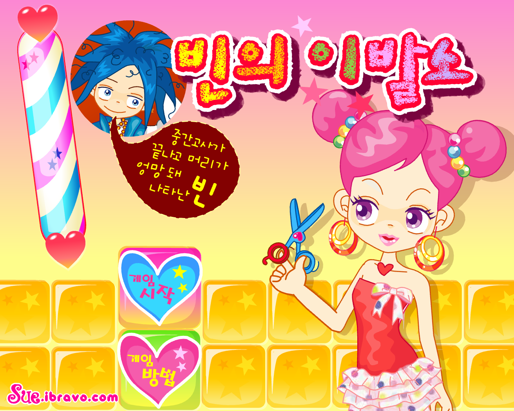

حيث تتحول قصّات الشعر إلى سحر ✨

مرحبًا بكِ في لعبة **صالون شعر بين**، المكان الذي تنبض فيه تسريحات الشعر بالحياة!
بين، حبيب سو، مرّ بفترة امتحانات صعبة، ونتيجة لذلك أصبح شعره في فوضى تامة.
الصالون الآن يعج بالمقصات، وصبغات الشعر، والكثير من المرح والإبداع.
مهمتكِ؟
منح بين أروع تغيير مظهر على الإطلاق ✨
اختاري، قصّي، لوّني، وصفّفي شعره تمامًا كما يفعل مصفف شعر حقيقي.
---
### 🎮 طريقة اللعب
اللعب سهل وممتع!
ابدئي باختيار تسريحة من كتاب التسريحات، ثم استخدمي الفأرة لقص الشعر، صبغه، وتصفيفه.
✂️ ابدئي بالمقص
🎨 انتقلي إلى الصبغة
🌀 أضيفي اللفافات إذا احتاجت التسريحة
⚠️ انتبهي:
يجب إكمال كل مرحلة قبل الانتقال إلى التالية، وإذا عدتِ خطوة للخلف ستحتاجين لإعادتها من جديد.
💗 هل نسيتِ شكل التسريحة؟
اضغطي على **القلب الوردي** للحصول على تلميح سريع — لكن يمكنك استخدامه **مرة واحدة فقط**!
بعد الانتهاء من الشعر، يمكنكِ اختيار الملابس المناسبة ليكتمل مظهر بين الجديد.
تذكري التسريحة التي اخترتها في البداية، وخذي وقتكِ…
الدقة والإبداع هما سر النجاح!
---
في **Bin's Hair Salon**، أنتِ مصففة الشعر التي تصنع السحر ✨
هل أنتِ مستعدة للقص، التلوين، والتصفيف؟
هيا، أمسكي المقص وابدئي!
صُنع بحب 💖 بواسطة Wiam Bahri
الجمال يبدأ بتفصيلة… وتسريحة ✨